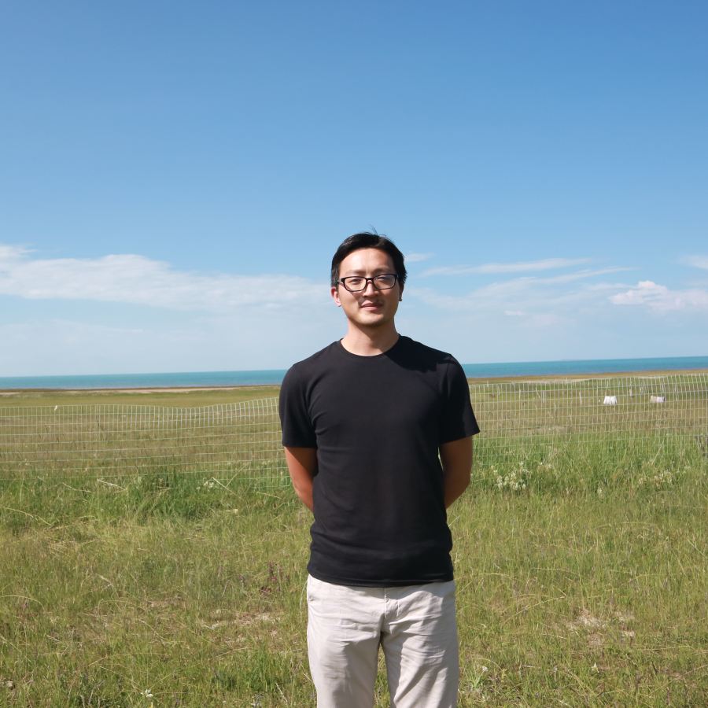
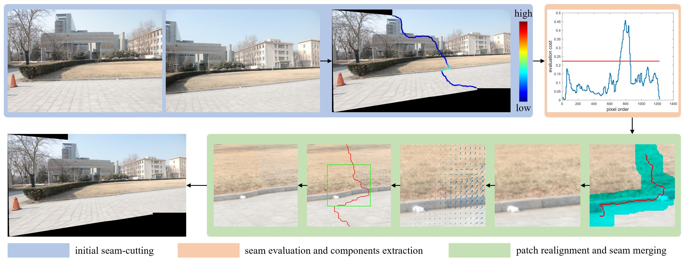
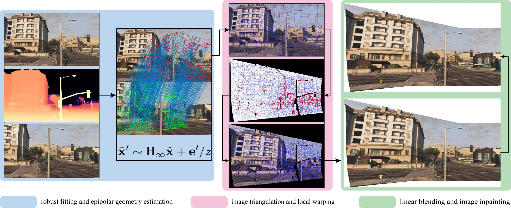
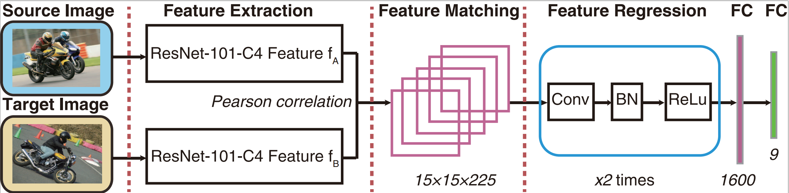

|
 |
Tianli Liao
|
Biography
I am a lecturer in the College of Information Science and Engineering, Henan University of Technology. I received my Ph.D. degree in Applied Mathematics in 2019 from Center for Combinatorics, Nankai University, supervised by Prof. William Y.C. Chen. My current research interests mainly lie in the fields of deep learning, computer vision, and image processing, especially image/video stitching, image manipulation, NeRF, and medical image processing.
Experience
Lecturer
College of Information Science and Engineering, Henan University of Technology
July 2019 – Present, Zheng Zhou
Education
|
Center for Combinatorics, Nankai University Doctor, 2013-2019 |
|
School of Mathematics and Statistics, Wuhan University Bachelor, 2009-2013 |
Selected Publications
|
 |
Seam-guided Local Realignment for Large Parallax Image Stitching |
|
 |
Natural Image Stitching Using Depth Maps |
 |
Single-Perspective Warps in Natural Image Stitching |
 |
Quality evaluation-based seam estimation for image stitching |
|
 |
Learning-based Natural Geometric Matching with Homography Prior |
 |
Perception-based seam cutting for image stitching |
Journal Reviewer
Signal, Image and Video Processing (SIViP)
IEEE Transactions on Geoscience and Remote Sensing (TGRS)
Machine Vision and Applications (MVA)
IEEE Transactions on Image Processing (TIP)
Projects
Natural Science Foundation of Henan Province, 2022-2023.